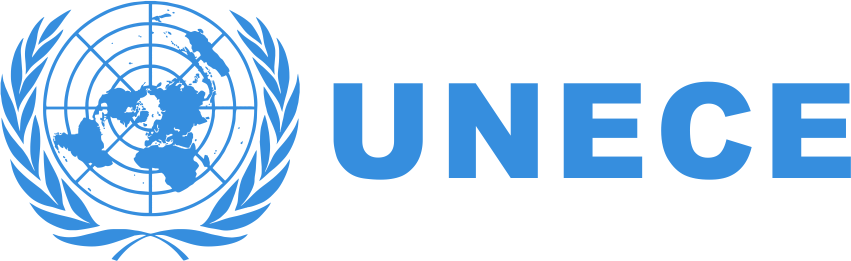
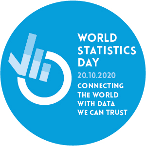
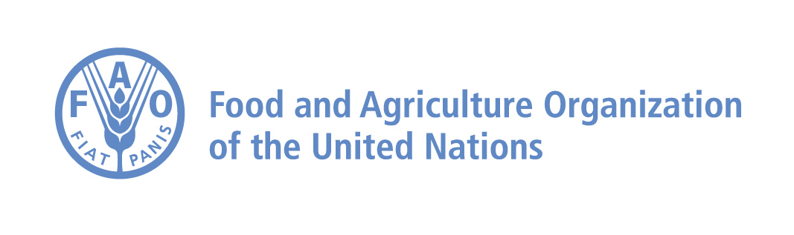
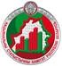
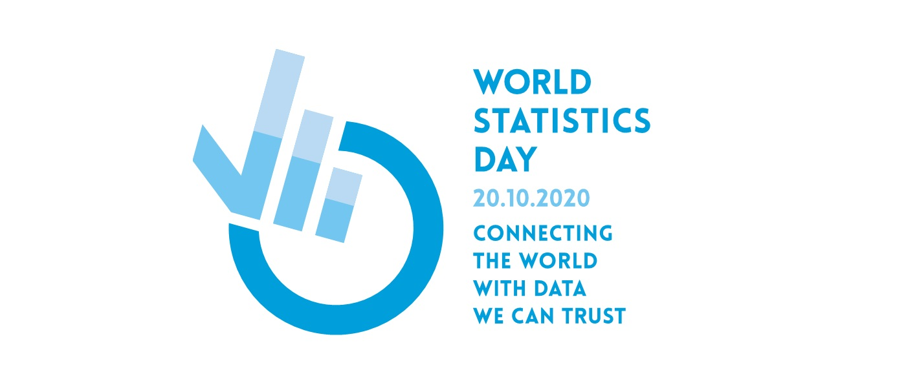

Report on Celebration of World Statistics Day 2020 in India
by The National Statistical Office of the Government of India, Ministry of Statistics & Programme Implementation
24 December 2020
The National Statistical Office of the Government of India, Ministry of Statistics & Programme Implementation, prepared a report on national activities carried in the country to celebrate World Statistics Day 2020. In India, World Statistics Day was celebrated by various Central Government Ministries and State Governments in tune with the theme of the World Statistics Day 2020.
Read More
Census and Statistics Department, Hong Kong, China celebrates World Statistics Day 2020
by Census and Statistics Department, Hong Kong, China
1 December 2020In celebration of the World Statistics Day 2020, the Census and Statistics Department, Hong Kong, China (C&SD) set up a new thematic session for the third World Statistics Day on the C&SD website on 20 October 2020.
Read More
Proceedings of Bahrain Statistical Society’s celebration of the World Statistics on 20.10.2020
by Bahrain Statistical Society
1 December 2020Bahrain Statistical Society (BSS) in collaboration and uranium sponsorship from Human Performance Technology (HPT) center, celebrated the World Statics Day in an online event on the 20th October 2020. The celebration took the form of a panel discussion of shared thoughts on the topic of data.
Read More
Suriname’s President commends the country’s statisticians on World Statistics Day
Message from the President of the Republic of Suriname
1 December 2020
In a Message from the President of Suriname addressed to the Secretary-General on the occasion of the Worlds Statistics Day, His Excellency draws attention to the essential need for high quality statistical data for democratic society. The President states that “the Covid-19 pandemic has fueled worldwide interest for high quality statistics”, and data and statistics have been used to monitor socio-economic impacts of the pandemic on the Surinamese population.
Read More
Statistics about statisticians: Thematic website launched by Rosstat
by The Federal State Statistics Service of the Russian Federation (Rosstat)
28 October 2020
The Federal State Statistics Service of the Russian Federation (Rosstat) has launched a thematic website containing “statistics about statisticians”: facts and figures about national statistical offices, history of statistics, Rosstat new projects, as well as interview with the world’s famous statisticians.
Read More
European Central Bank published a blog and a video on the occasion of World Statistics Day

by European Central Bank
28 October 2020
On the occasion of World Statistics Day, the European Central Bank published a blog by Isabel Schnabel, Member of the Executive Board of the ECB, entitled Don’t take it for granted: the value of high-quality data and statistics for the ECB’s policymaking. In the article, the importance of the independent statistics as necessary to safeguard the quality of statistics is emphasized.
Read More
General Directorate of Statistics, Ministry of Finance, Timor-Leste celebrates World Statistics Day

by Timor-Leste General Directorate of Statistics
28 October 2020
The General Directorate of Statistics (GDS) held a special celebration on World Statistics Day to promote quality statistics which are indispensable, trustable, reliable, and impartial. Vice-minister of Finance, H.E. Ms. Sara Lobo Brites launched the celebrations on 13 October.
Read More
YoungStatS, and initiative of Young Statisticians Europe launched on World Statistics Day
by YoungStatS28 October 2020
YoungStatS blog and webinar project, https://youngstats.github.io/, is set up to promote research in statistics in its broadest sense, encompassing all of its areas and applications, among other mathematical statistics and probability, official statistics, biostatistics and medical statistics, social statistics, economic statistics and econometrics, environmental statistics, statistics in natural sciences, data science and survey methods.
Read More
Raising awareness for quality data and statistics in the water sector in Bolivia
by GIZ28 October 2020
The Gesellschaft fuer Internationale Zusammenarbeit (GIZ), with financing of the German Federal Ministry of Economic Cooperation and Development (BMZ) and in cooperation with the Bolivian Ministry of the Environment and Water (MMAyA) is carrying out the project "Implementation of the Agenda 2030 in Bolivia: ProAgenda 2030”. The general objective of the project is to improve the quality and quantity of data and statistics in the water sector and its use.
Read More
Stats Sierra Leone celebrates World Statistics Day
by Stats Sierra Leone
22 October 2020
Stats SL coordinated activities at national level to celebrate World Statistics Day, with a campaign that specifically showcased how their work has responded to the data revolution and the demand for innovative solutions to meet the data demands of sustainable development.
Read More
ECE Executive Secretary celebrates World Statistics Day
by UNECE
22 October 2020
On 20 October 2020, the Executive Secretary of UNECE shared a blog entitled, Trustworthy official statistics helps us all overcome crises, now and in the future, in which she calls for a renewal of our commitment to the work of official statistics producers.
Read More
ESCAP released a blog for World Statistics Day and hosted a Stats Café
by Gemma Van Halderen and Rikke Munk Hansen
22 October 2020
ESCAP released a blog on connecting the Asia-Pacific region with data we can trust and hosted a Stats Café
Read More
World Statistics Day 2020 Virtual event in Naypyitaw, Myanmar
by Central Statistical Organization
22 October 2020
World Statistics Day 2020 Virtual event was held was held on 20th October 2020 with the theme “Connecting the world with data we can trust”.
Read More
Centre for Public Policy and Good Governance, Directorate of Economics and Statistics (DES) and UNDP to observe World Statistics Day virtually
by Centre for Public Policy and Good Governance, Directorate of Economics and Statistics (DES) and UNDP
22 October 2020
Centre for Public Policy and Good Governance, Directorate of Economics and Statistics (DES) and UNDP to observe World Statistics Day virtually. In line with the celebration of World Statistics Day all over the world Centre for Public Policy and Good Governance (CPPGG) is organizing a webinar on 20th October 2020 from 11:00 am- 13:00 pm (IST).
Read More
Nicaragua celebrates World Statistics Day with series of activities

by Instituto Nacional de Información de Desarrollo - INIDE, Nicaragua
22 October 2020
Honoring the commitment of the National Development Information Institute (INIDE), with the official statistics of the Republic of Nicaragua, we have developed a series of activities that began on Friday, October 9, 2020, with the commemoration of the foundation of our National Statistics Office known as INIDE ...
Read More
Government of TamilNadu (India) plans virtual event to mark World Statistics Day
by The Planning Development and Special Initiatives Department and the Department of Economics and Statistics, Government of TamilNadu
21 October 2020
The Planning Development and Special Initiatives Department and the Department of Economics and Statistics, Government of TamilNadu, has proposed to celebrate “3rd World Statistics Day” on 20th October, 2020 under the theme “Connecting the World with Data we can trust” and the events has been organised from 19th to 21st October 2020 Virtually.
Read More
Africa Statistics Day 2020 (18 November)
by African Centre for Statistics , UNECA
22 October 2020
African Statistics Day is an annual event celebrated on 18 November to raise public awareness of the importance of statistics in all aspects of social and economic life. The theme this year is “Modernizing national statistical systems to provide data and statistics to support sustainable peace and development in Africa”, which is in tandem with the theme of the African Union for the year 2020, “Silencing the guns: Creating conducive conditions for Africa’s development”.
Read More
Central Statistical Bureau of Latvia signed a very important cooperation agreement with the University of Latvia
Central Statistical Bureau of Latvia
21 October 2020
On 20 October, World Statistics Day Central Statistical Bureau (CSB) signed a very important cooperation agreement with the University of Latvia on the improvement of study process and scientific work accordingly requirements of labour market and improved collaboration opportunities with students.
Read More
World Statistics Day and the 2030 Agenda for Sustainable Development
by Statistics Canada
21 October 2020
Established by the United Nations Statistical Commission, the third World Statistics Day will be celebrated around the globe with the theme, “Connecting the world with data we can trust”. This theme reflects on the importance of trust, authoritative data, innovation and the public good in national statistical systems.
Read MoreThe U.S. Bureau of Labor Statistics (BLS) invited some fans to celebrate World Statistics Day

by U.S. Bureau of Labor Statistics
21 October 2020
As the gold-standard source of information on labor market activity, working conditions, price changes, and productivity in the U.S. economy, the Bureau of Labor Statistics has, for over 136 years, embodied the ideal of “connecting the world with data we can trust”.
Read MoreConnecting the world with data we can trust – video message from Statistics Canada
by Statistics Canada
21 October 2020
Statistics Canada has prepared a video about World Statistics Day, in which they thank all Canadians for putting their trust in them and for the role they play in helping paint the picture and tell the story of how Canada is changing, and growing.
Read MoreWorld Statistics Day! MALDIVES - Program for the Statistics Week from 20-27 October 2020
by Maldives National Bureau of Statistics
21 October 2020
The National Bureau of Statistics in the Maldives, in celebration of the World Statistics Day 2020, have planned to celebrate a Statistics week from 20-27 October 2020 with the participation of all agencies in the National Statistics System. A number of events are being carried out over the week including webinars on history of the NSS in Maldives economic statistics, social statistics, and the future of statistics.
Read MoreSamoa Bureau for Statistics celebrates World Statistics Day with an in-person and virtual seminar
by Samoa Bureau for Statistics
21 October 2020On 20 October, the Samoa Bureau for Statistics invited statisticians to gather for a virtual seminar to celebrate World Statistics Day. Ali’imuamua Malaefono Ta’aloga Fa’asalaina, CEO/ Government Statistician, gave the welcoming remarks, followed by a keynote address by the Honorable Prime Minister/ Minister for Samoa Bureau of Statistics Tuilaepa Dr Sa’ilele Malielegaoi.
Read MoreA call for a Global Data Convention
by the Committee for the Coordination of Statistical Activities (CCSA)
20 October 2020Data – the single word that defines our age; data have assumed a new importance for today’s economies, societies and politics. Data, the ubiquitous globalized commodity, easily shared, duplicated and traded, are the glue that binds and drives the digital economy, the cloud, blockchain, the internet-of-things, and even our politics. They offer promise but also peril – they are a tool for liberation, but also potentially a weapon for exploitation. Data transcend borders, challenge national sovereignty and are increasingly being thought of as a new form of capital
Read MoreI ran 7 km for World Statistics Day!
by Stefan Schweinfest
20 October 2020On 20 October 2020, I took to the streets of NYC to run for World Statistics Day! I invite you to join me as we together run for World Statistics Day!
Read MoreUN Task Team on Training, Competencies and Capacity Development for the use of Big Data in Official Statistics
by Ceri Regan and Rebecca Lynch
20 October 2020The UN Task Team on Training, Competencies and Capacity Development was established in February 2019, bringing together 9 countries and 10 international institutions. Its primary goal is to help National Statistical Offices (NSOs) embrace the use of big data in official statistics and is undertaking projects that map out where NSOs currently are on their individual big data journeys, and their current and future development needs. They aim to ensure NSOs are increasingly equipped to work with non-traditional data and to produce statistics that are trustworthy, authoritative and provide value and insight, for the public good.
Read MoreUN Human Rights’ World Statistics Day call to action
by Francesca Marotta,
Chief of the Methodology Education and Training, UN Human Rights
UN Human Rights’ World Statistics Day call to action: human rights approach key to restoring public confidence in official data
Read MoreItalian National Institute of Statistics celebrates World Statistics Day with its Tenth Italian Day of Statistics
by Italian National Institute of Statistics
20 October 2020The Tenth Italian Day of Statistics promoted and organized by the Italian National Institute of Statistics (Istat) and the Italian Statistical Society (Sis), is celebrated on 20 October, 2020, on the same date as World Statistics Day.
Read MoreFAO will launch the 2020 Statistical Yearbook and Pocketbook on World Statistics Day.
by Jose’ Rosero Moncayo
19 October 2020Now more than ever, timely, accurate and high-quality statistics are essential to monitor trends and inform policy decisions, whether concerning the longer-term challenge of delivering on the Sustainable Development Goals (SDGs), or the immediate threat represented by the COVID-19 pandemic.
Read MoreOECD Latin America and Caribbean Data Portal launch
by OECD
19 October 2020For over 20 years, the Organisation for Economic Co-operation and Development (OECD) has been working closely with countries in Latin America and the Caribbean (LAC) to facilitate policy dialogue and support reform efforts. The growing engagement of LAC countries and regional stakeholders with the OECD, as well as our strong partnerships with regional international organisations has led to the production of more OECD policy indicators and data for an increasing number of countries in the region.
Read MoreMorocco plans a Webinar on the Role of Official statistics in the context of the Pandemic COVID-19
by Haut-commissariat au Plan
19 October 2020
Recent global emergencies, including the ongoing COVID-19 pandemic, have led to numerous challenges. It has become increasingly clear that receiving data and information in near real time is crucial. To meet these emerging challenges – and more long-term issues, such as achieving the SDGs – FAO is promoting new and innovative approaches to collecting and disseminating data
Read MoreFAO released the Data Lab for Statistical Innovation.
by Jose’ Rosero Moncayo
19 October 2020Recent global emergencies, including the ongoing COVID-19 pandemic, have led to numerous challenges. It has become increasingly clear that receiving data and information in near real time is crucial. To meet these emerging challenges – and more long-term issues, such as achieving the SDGs – FAO is promoting new and innovative approaches to collecting and disseminating data
Read MoreSuriname celebrates Caribbean Statistics Day and World Statistics Day together.
by Suriname General Bureau of Statistics
19 October 2020Both the Caribbean Statistics Day and World Statistics Day will be celebrated together on 20 October 2020. Due to the ongoing pandemic, small meetings of staff of the General Bureau of Statistics, GBS will gather to mark the Day.
Read MoreBelarusian statisticians join the celebration of the World Statistics Day.
by the National Statistical Committee of the Republic of Belarus
19 October 2020Being part of the global statistical community, Belarusian statisticians are happy to join the celebration of the World Statistics Day. This festive event is doubly remarkable for us as this year we mark the 100th anniversary of the establishment of state statistics bodies of the Republic of Belarus.
Read MoreThe Statistical Centre of Iran plans for their Statistics and Planning Week from 17 to 22 October 2020
by the Statistical Centre of Iran
19 October 2020The Statistical Centre of Iran (SCI) plans to celebrate the National Statistics and Planning Day (NSPD2020) on 22 October 2020 as well as the World Statistics Day 2020 on 20 October 2020 in I.R.Iran. Because of the happy coincidence of these two statistical occasions, the SCI has decided to celebrate them in the form of Statistics and Planning Week from 17 to 22 October 2020, aiming at covering both of them.
Read MoreBahrain Statistical Society’s celebration of the World Statistics
by Bahrain Statistical Society
19 October 2020The Bahrain Statistical Society (BSS), a professional non-for-profit, non-political, non-religious organization, is planning to celebrate the World Statistics Day (WSD) on 20th October 2020 in response to the United Nations call.
Read MoreChile INE plans a day-long celebration to mark World Statistics Day

by National Statistics Institute
19 October 2020The statistical office of Chile is planning a day of activities to celebrate WSD 2020! They have two main webinars and a number of informational sessions planned throughout the day on 20 October 2020.
Read MoreStatistics-Bloom-in-Harmony-Malaysia.html

by the Department of Statistics, Malaysia
16 October 2020In line with the celebration of the Worlds Statistics Day 2020 around the world and to be a part of this celebration, I would like to refresh DOSM's dedication to the global community on a special song entitled "Statistics Bloom in Harmony".
Read MoreMongolia’s plans to mark World Statistics Day

by National Statistics Office of Mongolia.
16 October 2020Greetings from Mongolia! Thank you very much for asking regarding the World Statistics Day, herewith, would like to introduce some events that will be organized during the Special day.
Read MoreLISA 2020 Symposium Keynote and Zoom Celebration Event to be held on WSD
16 October 2020
LISA 2020 is a program to build statistical analysis and data science capacity in developing countries to transform evidence into action. We do this by helping to create statistics and data science collaboration laboratories (“stat labs”).
Read MorePalestinian Central Bureau of Statistics and the UN to hold a webinar to mark World Statistics Day

by Palestinian Central Bureau of Statistics
16 October 2020The Palestinian Central Bureau of Statistics and the UN are holding a virtual event to celebrate World Statistics Day on 20 October at 13:00. Please see the flyer for more details and how to register.
Read MoreRunners for statistics – a virtual run around the world
by UNSD
15 October 20202020 has become a year of virtual events. Virtual meetings, virtual birthdays, so why not a virtual run for World Statistics Day …
Read MoreGlobal-Network-of-Data-Officers-and-Statistician-for-WSD.html
by UNSD
15 October 2020During the World Statistics Day, the United Nations Statistics Division will officially launch the Global Network of Data Officers and Statisticians, a professional network for statisticians, data officers, and geospatial information experts around the world.
Read MoreSDG Trade Monitor to be launched on World Statistics Day

by UNCTAD
15 October 2020World Statistics Day on 20 October is particularly important to me this year. The theme of this year's edition, “Connecting the world with data we can trust”, is without doubt closely connected to what the Swiss Federal Statistical Office (FSO) had originally planned for this occasion - to organise the UN World Data Forum, which starts on the 19th and finishes on the 21st October.
Read MoreJapan launches promotional video on #StatsDay2020
by the Office of the Director-General for Policy Planning on Statistical Standards
15 October 2020In Japan, the Office of the Director-General for Policy Planning on Statistical Standards, Ministry of Internal Affairs and Communications (MIC) have launched the promotional video featuring WSD 2020 on the Statistics Bureau YouTube Channel
Read MoreFor Georges-Simon Ulrich, World Statistics Day 2020 is closely connected to the UN World Data Forum
by Georges-Simon Ulrich, Director General of the Swiss Federal Statistical Office
14 October 2020World Statistics Day on 20 October is particularly important to me this year. The theme of this year's edition, “Connecting the world with data we can trust”, is without doubt closely connected to what the Swiss Federal Statistical Office (FSO) had originally planned for this occasion - to organise the UN World Data Forum, which starts on the 19th and finishes on the 21st October.
Read MoreMisuse of statistics: time to speak out
by John Pullinger, President, International Association for Official Statistics
14 October 2020The Fundamental Principles of Official Statistics are a pillar of the Global Statistical System. They have been endorsed by the United Nations General Assembly and are of universal applicability to all nations and at the regional and global levels. They set the standard for statistics that serve the public good, helping decision makers make well founded decisions and enabling others to hold those decision makers accountable for their promises
Read MoreWhat do you get for someone on World Statistics Day?
by John Bailer, ISI President
14 October 2020You know who is being honored on birthdays, Mother’s Day, Father’s Day and even Labor Day. But who is being recognized and celebrated on World Statistics Day (WSD)? The simple and easy answer is the profession and practice of statistics.
Read MorePakistan Institute of statistical training and research plans Celebration of WSD 2020 on 18 October 2020
13 October 2020Pakistan Institute of statistical training and research, Pakistan plans Celebration of WSD 2020 on 18 October 2020.
Read MoreINDEC Argentina’s new podcast - episode to focus on World Statistics Day’s theme
13 October 2020For World Statistics Day, a special commemorative episode (in Spanish) will promote this years’ theme "connecting the world with data we can trust."
Read MoreA conversation on The Future of Federal Statistics
12 October 2020On World Statistics Day the American Statistical Association (ASA), the Caucus for Women in Statistics (CWS), the Harvard Data Science Review (HDSR), the International Statistics Institute (ISI), and International Association for Official Statistics (IAOS) are sponsoring a virtual conversation on the future of federal statistics
Read MoreThe translation keep coming in: Eight more added
9 October 2020Translating the World Statistics Day logo into national languages is at the heart of the national campaign to mark World Statistics Day! We keep receiving more translation. The newest upload includes Estonian, Farsi, Finnish, German, Italian, Polish, Swedish and Turkish!
Read MoreWe have added the logo in Bulgarian, Dhivehi, Romanian, and Slovak
6 October 2020The World Statistics Day 2020 logo is now also available in Bulgarian, Dhivehi, Romanian and Slovak.
Read MoreJapan has produced a poster for World Statistics Day 2020
3 October 2020The Office of the Director-General for Policy Planning on Statistical Standards, Ministry of Internal Affairs and Communications (MIC) of Japan has created a new poster and plastic file folder featuring the logo of World Statistics Day 2020
Read MoreUruguay kicks off celebrations of its National Statistics Day on 30 September
by Uruguay National Institute of Statistics
28 September 2020The National Statistics Day is being celebrated in Uruguay on 30 September and 1 October 2020 with the launch of the Strategic Plan of the National Institute of Statistics, two webinars on virtual censuses and on planning the future, and a round table on challenges for the 2023 Census.
Read MoreCampaign to collect interesting facts about NSOs being carried out by Rosstat as part of their World Statistics Day celebrations!
by Federal State Statistics Service of the Russian Federation
24 September 2020On occasion of the third World Statistics Day the Federal State Statistics Service of the Russian Federation (Rosstat) has launched a campaign on collecting interesting facts about NSOs to present them further on in the shape of diagrams and charts visualizing the differences.
Read MoreSecretary-General of the United Nations invites governments to celebrate World Statistics Day 2020
by António Guterres
4 September 2020As the United Nations marks its seventy-fifth anniversary and the world deploys data to face a common challenge, let us use World Statistics Day to spotlight the role of statistics in advancing sustainable development for all
Read MoreUN Statistics Division Director: excited to hear about your plans for World Statistics Day 2020
by Stefan Schweinfest
14 August 2020In a letter on 13 August to the global statistical community, I shared my excitement in inviting you to initiate your special celebrations for World Statistics Day 2020 occurring on 20 October 2020.
Read MoreTo make the world better connected by statistics
by Shigeru Kawasaki
11 AUGUST 2020This year, the third World Statistics Day (WSD) will be celebrated on 20 October all over the world. I hope the opening of this blog will contribute to global promotion of the WSD.
Read MoreWorld Statistics Day 2020 launch
 13 JULY 2020In an age when data have taken on an ever-more important role, data we can trust is at the foundation of connecting the world.
Read More